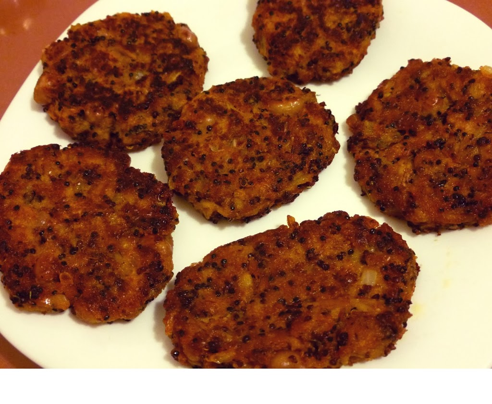

VEGAN TARİFLER
Siyah Kinoali BÖrülce Mücveri

Malzemeler
<>1 bardak haslanmış börülce
<>1 bardak haslanmış arpa
<>1 bardak siyah kinoa
<>1 adet ince dogranmış sogan
<>1 çorba kaşığı hardal
<>1 çorba kaşığı domates salçası
<>Kimyon
<>Kırmızı toz biber
S
<>Kekik
<>Tuz
Baglamak icin
<>Un (takriben 2 corba kasigi)
Yapılışı
⚫Arpayı ve börülcenin bir kısmını rondoda neredeyse püre haline getirin, hiç su eklemeyin.
⚫Derin bir karıştırma kasesinde tüm malzemeleri karıştırıp damak zevkinize gore baharatları ekleyin.
⚫Yarim çorba kaşığı un ekleyip yine karıştırın, kofte olusturma denemesinde bulunun.
⚫Eger karışım cok cıvık değilse ve dağılmadan, yapışık duruyorsa koftelerinizi sekillendirmeye geçebilirsiniz.
⚫Dağılıyorsa biraz daha un ekleyin, yine kofte yapmayı deneyin, dağılıyorsa biraz daha un ekleyin,
⚫Ceviz büyüklüğünde topcuklar alip elinizle kofte şekline getirin ve kızgın bir tavada arzu ettiginiz miktarda sıvı yag ile pişirin.
⚫Pisirme kısmını fırında da yapabilirsiniz, üzerlerini yaglamanızı tavsiye ederim.
Körili Patatesli Nohut
Malzemeler
<>Malzemeler 250 gr Nohut Köri
<>1 adet küçük Havuçü
<> 1 adet irice Patates
<> 2 adet Domates
1 bardak Su 2 sap Yeşil Soğan ¼ çay kaşığı Hindistan Cevizi Tuz, Karabiber
Yapılışı
⚫Nohutları bir gece önce suya koyun ve bekletin.
⚫Önce patatesleri hafifçe haşlayınız. Küçük küçük
⚫Ertesi gün bir kapta, süzülmüş nohutları, bir bardak suyu, hepsi küçük küçük doğranmış havuç, patates, domates, yeşil soğan, hindistan cevizi, istediğiniz kadar köri tozunu, tuz ve karabiberi bir tava içinde karıştırınız.
⚫Karışımın üstünü örterek, havuçlar yumuşayana kadar pişirin. Eğer suyu azalırsa, biraz su katınız.
⚫Bu karışımı yağsız ya da az yağ ile pişirilmiş pilav ile servis yapını
Granola Bar

Malzemeler
<>2 su bardağı yulaf ezmesi
<>1/2 (yarım) su bardağı hindistan cevizi
<>1 su bardağı badem
<>1/2 (yarım) su bardağı kaju
<>1 su bardağı kuru meyve (Ben yaban mersini kurusu kullandım. Siz istediğiniz kuru meyveyi kullanabilirsiniz)
<>1/2 (yarım) su bardağı kabak çekirdeği içi
<>1 çay bardağı damla çikolata
<>1 çay kaşığı tarçın
<>1 çay kaşığı vanilya
<>1 çay bardağı fıstık ezmesi
<>1 çay bardağı bal
<>1/2 (yarım) çay bardağı esmer şeker
NOT: Granolanın içine koyulan tüm yemişler tuzsuz olmalıdır.
Yapılışı
⚫Karıştırma kabının içerisine; Yulaf ezmesi, hindistan cevizi, badem, kaju ve kabak çekirdeği içi koyulur, karıştırılır.
⚫Fırın tepsisine yağlı kağıt serilir. Karışım dökülür ve yayılır. Isıtılmış 150 derecelik fırında 10 dakika pişirilir.
⚫Yulaflı karışım fırındayken; küçük bir tencereye, bal, esmer şeker, fıstık ezmesi, tarçın ve vanilya eklenir karıştırılır.
⚫Ocağa alınır. Kısık ateşte şeker eriyene kadar karıştırılır. (Çok fazla pişirmeyin)
⚫Fırındaki yulaflı karışım derin bir kaba alınır. İçerisine yapılan ballı harç eklenerek karıştırılır.
⚫Kuru meyve ve damla çikolata eklenir, karıştırılır.
⚫28×24 santimlik dikdörtgen fırın kabına üzerinden taşacak şekilde yağlı kağıt serilir.
⚫Yapılan harç kaba boşaltılır ve kaşığın tersi ile sıkı sıkı bastırılarak üzeri düzleştirilir.
⚫Önceden ısıtılmış 150 derecelik fırında 20 dakika pişirilir. Fırından çıkarılır soğumaya bırakılır.
⚫Soğuyan granola arzu edilen şekilde keskin bir bıçak ile kesilerek servis edilir.Afiyet olsun.
Bon Appétit !